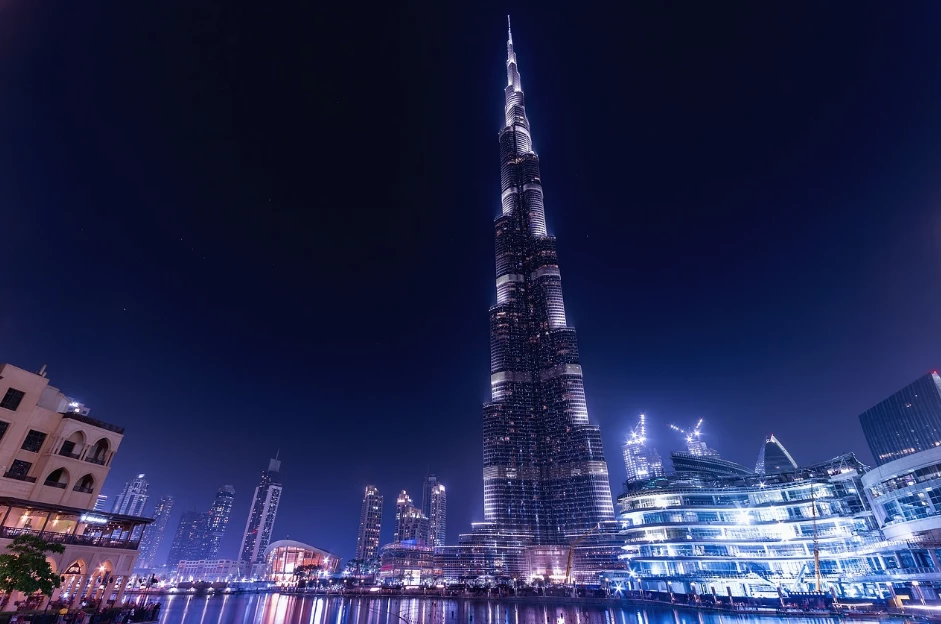

Burdż Chalifa to najwyższy budynek na świecie, położony w Dubaju, w Zjednoczonych Emiratach Arabskich. Jego budowa rozpoczęła się w 2004 roku, a zakończyła w 2010 roku. Jest ikoną nowoczesnej architektury i technologii. Burdż Chalifa osiąga wysokość 828 metrów i posiada 163 piętra użytkowe.
Projekt budynku został opracowany przez firmę architektoniczną Skidmore, Owings & Merrill, a głównym architektem był Adrian Smith. Zastosowano zaawansowane technologie budowlane, aby zapewnić stabilność i bezpieczeństwo wieżowca, w tym specjalny system fundamentów, który pozwala na wytrzymanie ogromnych obciążeń.
Burdż Chalifa pełni funkcję luksusowego centrum biznesowego, hotelowego i mieszkalnego. Wewnątrz znajdują się m.in. apartamenty, biura, a także prestiżowy hotel Armani, który zajmuje pierwsze piętra budynku. Wieżowiec jest jednym z głównych symboli rozwoju Dubaju i stanowi atrakcję turystyczną, przyciągającą miliony odwiedzających każdego roku.
Jego futurystyczny wygląd i imponująca wysokość czynią go rozpoznawalnym na całym świecie, a platforma widokowa na 148. piętrze oferuje zapierające dech w piersiach widoki na miasto i Zatokę Perską. Budynek zdobył wiele nagród za swoją architekturę i inżynierię, a jego wpływ na rozwój nowoczesnej architektury jest niezaprzeczalny.
Funkcjonalność i przeznaczenie Burdż Chalifa pełni różnorodne funkcje. W dolnej części budynku znajduje się luksusowy hotel Armani, zaprojektowany przez znanego projektanta mody Giorgia Armaniego. Powyżej ulokowane są luksusowe apartamenty mieszkalne oraz przestrzenie biurowe, które zaspokajają potrzeby najbardziej wymagających klientów. Znajdują się tam również liczne restauracje, w tym At.mosphere – najwyżej położona restauracja na świecie, na 122. piętrze. Jedną z najbardziej spektakularnych atrakcji budynku jest platforma widokowa „At The Top” na 148. piętrze, która oferuje zapierające dech w piersiach widoki na całe miasto Dubaj oraz rozległą Zatokę Perską. Platforma ta jest jedną z najczęściej odwiedzanych atrakcji turystycznych Dubaju, przyciągając miliony turystów rocznie.
| Burdż Chalifa | |
|---|---|
|  | |
| Podstawowe informacje | |
| Pełna nazwa | Burdż Chalifa |
| Położenie | Dubaj, ZEA |
| Wysokość | 828 metrów |
| Liczba pięter | 163 |
| Rok ukończenia | 2010 |
| Architekt | Adrian Smith (SOM) |
| Koszt budowy | 1,5 miliarda USD |
| Funkcje | Hotele, Apartamenty, Biura |